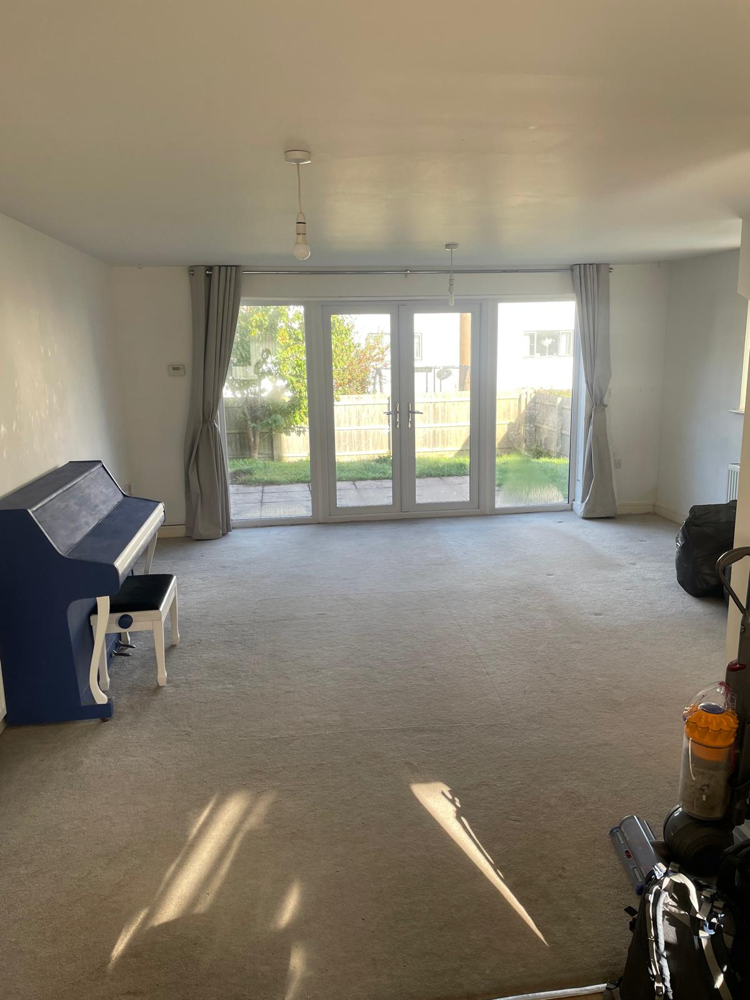
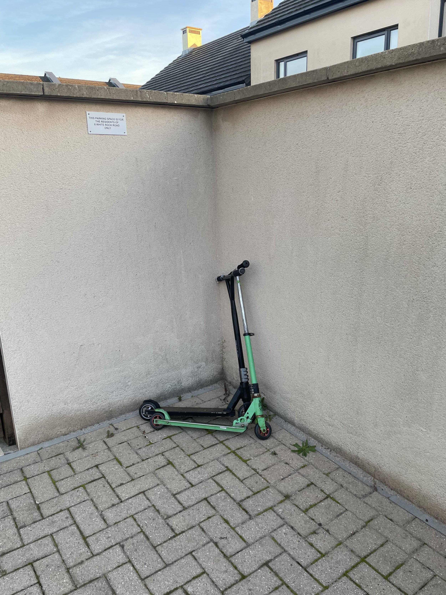

It's quite strange, thinking back, to how our usual lives shrank and shrank until all of our possessions could fit into a single room.
The idea to take this journey had been percolating for some time, but we kept finding tiny ways to put it off, to say 'if things fall into place…' right up to the moment R checked Skyscanner and saw a really good deal for the four of us to fly into Bangkok…
So do we hit 'buy now', or…?
a good use of life.
It's 'a good use of life'. That's what the partner of a friend said, when we met up with them in London, the day before flying out to Bangkok. A good use of life. Personally, that five-word mission statement rang something deep within me. I believe that no matter how this turns out, no matter the hardships that may (and probably will) emerge from the day-by-day smooth sailing like jagged rocks hungrily eyeing-up the delicate wooden boards of our ship, no matter how long we do this for… To just step off the conveyer belt for a time, to break routine (and part of me loves routine), to do this, and really do this — it is, I believe, a good use of life.
And so began the process. The inevitable onward march to a singular point; that point of which we would not have anywhere permanent to live; not have a permanent job; not have a car or other way of getting around. And not have the majority of our possessions.
We floated on clouds of short-term, day-by-day comfort over the next few weeks. Making lists of what needed to be done and when, ticking some off, adding more. Handing in our notice to our landlord — after over eight years. Handing in my month's notice at work. Sorting through our stuff; what we wanted to keep in storage (we tried to be as ruthless as we could), what we wanted to bring with us, and what could go. A lot went.
And every day, it loomed nearer.
Even evenings spent discovering and subsequently binge-watching The Traitors after another tiring day were short-term comfort, for when the morning came around again, there was always more to do.
E and e were amazing through all of this.
I picture them in the middle of the lounge as if stranded on a tiny island, the tide chipping away constantly at their shore until it's nibbling at their ankles. A time-lapse photo; stood stock-still in the centre of the room whilst a blur of activity happens around them, piles of objects being taken here and there, some staying for weeks, others disappearing (to the charity shop, friends' houses, the dump) quicker than you can blink.

Timing was everything. When should we sell the car? Well, I need it 'till the last weekend. But then that only gives us a day to sell it. What if we don't?!
I'm typically the sort of person who wants everything to be sorted as soon as possible, to stave off the stress of a monumental event, but unfortunately in this case some things just had to wait to nearer our time of departure. Our beds; held on to the last week and then miraculously sold so we only had to suffer the slow deflating of an air mattress for a single night. (Well, E and e had a few nights on theirs, but they're smaller so they don't count…). Our landlord very graciously said not to worry if we couldn't find a home for our much-cherished recently up-cycled and upright piano. We didn't. To be honest, as soon as he said that, we mostly stopped trying, but that was a big thing to stop worrying about.
The garden was its own world to be sorted out; once the summer's slip-and-slide had been disposed of (along with all the slugs, slippin'-and-slidin'), and the much-used, much-loved cliché-of-a-family-purchase-in-lockdown trampoline went, the grass could slowly start its transition back to how it once was, before the excited torrent of many young feet. Footballs were donated to neighbours. Battered storage boxes ("a 'shed' by any other name…") incredibly went to someone on Marketplace — free, of course, but I was still genuinely astonished, given the state of it.
Everything dwindled down and down from our outside world until all that was left were two scooters leaning up against the wall — one slightly larger than the other.

The final word of our final chapter. A statement of growth from two boys who were too young to remember moving in over eight years ago, and are now growing to truly be citizens of the world. They are bringing their innocence with them — they have four comfort 'pets' (soft toys) between them — but are very much leaving some of their childhood behind.
— J ✻